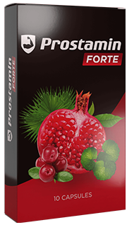
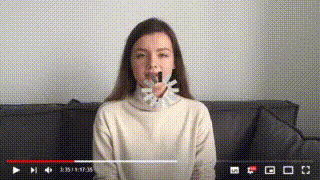

PROSTAMIN FORTE
Vielen Dank für Ihre Bestellung!
Ihre Bestellung wurde angenommen und wird gerade bearbeitet.
- Produkt: PROSTAMIN FORTE
- Ihr Name: Peter Schmidt
- Ihre Telefonnummer: +49 999 99 99 99
Ein Experte wird sich in Kürze mit Ihnen in Verbindung setzen, um weitere Einzelheiten zu besprechen.
Vorsichtig! Das Institut für Urologische Forschung in Deutschland (Berlin) ist der Hauptvertreiber von PROSTAMIN FORTE im Rahmen des Rabattprogramms.
Weniger als 50 Rabattpakete übrig. Beeilen Sie sich! Das Programm wird dieses Jahr nicht wiederholt.
- 

Häufig gestellte Fragen
Mitglied der Europäischen Vereinigung für Urologie, Androloge, Urologe und Androloge, beantwortet Ihre Fragen
Philipp Werner
- Wie wirkt das Mittel?
Philipp Werner: PROSTAMIN FORTE ist ein neues modernes Produkt zur Behandlung von Prostatitis und zur Wiederherstellung der Potenz in jedem Alter. Die Kapseln lindern Entzündungen der Prostata, verbessern die Potenz, sorgen für eine stabile Erektion und einen lebhaften Orgasmus. Steigert auf natürliche Weise die Testosteronproduktion und verbessert die Spermienqualität.
- Was sind die Indikationen für die Einnahme von PROSTAMIN FORTE?
Philipp Werner: Die Hauptindikationen für die Einnahme von PROSTAMIN FORTE sind:
- chronische und akute Prostatitis,
- Vollständige oder teilweise erektile Dysfunktion,
- frühe Ejakulation,
- Probleme mit der Ejakulation, Unfähigkeit, den Geschlechtsverkehr zu beenden,
- schwache Libido, Mangel an sexuellem Verlangen.
- Wie viel PROSTAMIN FORTE sollte ich einnehmen, um Ergebnisse zu erzielen?
Philipp Werner: Um die Prostatitis loszuwerden und die Potenz wiederherzustellen, wird eine Kur empfohlen. Die Dauer der Anwendung beträgt 2-3 Monate und wird im Beratungsgespräch individuell berechnet.
- Was ist in dem Produkt enthalten?
Philipp Werner PROSTAMIN FORTE hat eine natürliche Zusammensetzung:
- Serenoa-Palme-Extrakt - lindert Prostataentzündungen;
- Extrakt aus roten Heidelbeeren - stellt die Harnausscheidung und die Spermatogenese wieder her;
- Gotu Kola Leaf Extract - steigert die Libido, stärkt die Potenz;
- Shiitake-Pilzextrakt - verbessert die Durchblutung des Beckens;
- Reishi-Pilzextrakt - lindert Schmerzen, Brennen und Unbehagen beim Wasserlassen.
- Hat das Medikament irgendwelche Nebenwirkungen und Gegenanzeigen?
Philipp Werner: PROSTAMIN FORTE ist ein absolutes Naturprodukt und hat im Gegensatz zu anderen Präparaten keine Nebenwirkungen oder Kontraindikationen, so dass es auch von Menschen mit chronischen Erkrankungen gefahrlos angewendet werden kann. Die einzige Kontraindikation ist eine individuelle Unverträglichkeit gegenüber den Bestandteilen.
- Wie werden die Kapseln richtig eingenommen?
Philipp Werner: Das Mittel wird oral eingenommen. Die Kapseln sollten unzerkaut eingenommen werden. Dosierung: 1 Kapsel täglich 30 Minuten vor den Mahlzeiten.
- Wie unterscheidet sich das Produkt von anderen Arzneimitteln?
Philipp Werner: PROSTAMIN FORTE ist klinisch erwiesenermaßen hochwirksam und hat mehrere Vorteile gegenüber anderen Prostatitis-Mitteln. 99 von 100 Männern berichteten von einer deutlichen Verbesserung. 98 % der Männer bestätigten, dass das Produkt die Symptome der Prostatitis wirksam lindert, das Wasserlassen normalisiert, die Potenz wiederherstellt und den Geschlechtsverkehr verlängert. Es ist auch das einzige Mittel, das mit Alkohol verträglich ist.
- Ist PROSTAMIN FORTE bei älteren Menschen wirksam?
Philipp Werner: PROSTAMIN FORTE ist in jedem Alter wirksam. Klinische Studien haben die Wirksamkeit des Produkts bei Männern über 70 Jahren bewiesen. 95 % der älteren Männer bestätigten, dass sie sich vollständig von der Prostatitis erholt und ihre Potenz wiederhergestellt hatten.
-
Von den Aufsichtsbehörden zugelassen.
-
100% Qualitätssicherung
-
PROSTAMIN FORTE hat alle Registrierungs- und Inspektionsverfahren in Übereinstimmung mit den geltenden Rechtsvorschriften durchlaufen.

Lesen Sie während der Bearbeitung Ihrer Bestellung Bewertungen von Personen, die es bereits ausprobiert haben PROSTAMIN FORTE:
- 
-


Johannes Bischoffshausen, 58 Jahre Ein Freund hat mir PROSTAMIN FORTE empfohlen, weil er selbst eine Prostatitis geheilt hat und mir davon erzählt hat. Ich habe die Diagnose jetzt seit drei Jahren, und jetzt lässt es nach und dann flackert es wieder auf. Ich begann mit der Einnahme von PROSTAMIN FORTE und jede Woche ging es mir besser und besser. Und jetzt, nach dem Kurs, habe ich die Prostatitis völlig vergessen. Ich gehe schon auf die Toilette. Er lernte eine Frau kennen und begann zusammenzuleben. Ich dachte, ich würde allein sein.

10
Lukas Weisman, 49 Jahre alt Ich war mit PROSTAMIN FORTE zufrieden. Ich habe es auf Anraten eines mir bekannten Arztes gekauft. Er lobte sie sehr und sagte, dass sie die beste Behandlung für Prostatitis sei. Und in der Tat, ich habe mich selbst davon überzeugt. Ich habe keine Schmerzen, mein Wasserlassen ist besser, ich muss nicht mehr wie früher auf die Toilette gehen. Ich empfehle dieses Produkt, es hilft wirklich bei Prostataproblemen.

1
Lenny Kasper, 57 Jahre Plötzlich hatte ich Probleme beim Wasserlassen und stellte fest, dass ich eine Prostatitis hatte. Ich habe die vom Arzt verschriebenen Tabletten genommen. Mir wurde schlecht, und ich verlor meine Erektion. Ich habe durch Zufall im Internet von PROSTAMIN FORTE erfahren und beschlossen, es auszuprobieren. Ich habe es jeden Tag eingenommen, eine komplette Kur gemacht und habe jetzt keine Probleme mehr. Die Erektion ist auch super. Eine solche Wirkung hatte ich gar nicht erwartet.

2
Leonie Semmelweis, 46 Mein Mann hat Probleme und geht nachts auf die Toilette. Er sagte, er habe starke Schmerzen beim Wasserlassen. Ich ging zum Arzt und erhielt die Diagnose Prostatitis. Ich habe Tabletten genommen, aber es wurde nicht besser, und dann kamen alle Symptome zurück. Ich habe durch Freunde von PROSTAMIN FORTE erfahren. Ich habe es kaum gefunden, aber ich habe es online bestellt. Mein Mann hat es zwei Monate lang eingenommen und ist die Schmerzen beim Toilettengang vollständig losgeworden, und im Bett ist es viel besser. Ein gutes Produkt für Männer, ich empfehle es!
5